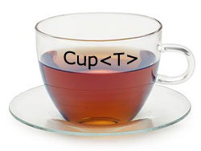

Advanced Generics in .NET
Created Saturday 26 December 2020, (original created Dec 20, 2016)
Note (December 2020): This is an article I wrote more than 3 years ago for my employer at that time, and now migrated to this space with some minor corrections.
The aim of this article is to give a brief and concise overview of the most advanced properties of generic types in C#.

This shall be useful for beginner developers and a practical review for the more experienced ones, in order to have a better understanding of how generics work and consequently being able to implement better designs.
Glossary
- JIT: Just-In-Time Compiler acronym, is the second .NET compilation instance, in which the intermediate code generated by the C# compiler is compiled (in real time and on demand) to assembly code, to then be executed by the CLR
- CLR: Acronym of the Common Language Runtime, is the execution time of the .NET platform, which is in charge of executing the applications compiled in all the languages that comply to the Common Language Specification. In addition to the virtual machine and the Just-In-Time compiler it has additional responsibilities like memory handling, types, security, etc.
- BCL: Acronym of Base Class Library, is the core library of the .NET framework. In addition to operating directly with the CLR, it exposes the primitive types and essential functionality to be able to run an application. Also known as mscorlib
- FCL: Acronym of Framework Class Library, is what most developers known as “the framework” of .NET. Using the BCL as foundation this expose a large number of namespaces with varied and complete functionalities like System.IO, System.Security, System.Text, etc.
Generics are a powerful feature present in a large number of modern programming languages, and C# is no exception.
It brings with it several unknown and ignored concepts by a large part of the developer audience, even though we see and even use them daily, especially when consuming almost any type or generic interface of the .NET framework libraries, either BCL or FCL.
Before we dive deep into this, it is worth doing a brief review of generics (those who are already familiar with the concept can skip on to the next section).
Generics revisited
What are generics? The short and simple answer is that it is a characteristic of typed programming languages that allows us to use types as parameters of other types. Or for the purists, better known as parametric polymorphism.
Using generics we can design interfaces and generic classes that have the same implementation, regardless of the type of parameter, increasing the flexibility of use in a safe way (type safety).
In this example we can see it in action:
public class MyStack<T>
{
readonly int m_Size;
readonly T[] m_Items;
int m_StackPointer = 0;
public MyStack(int size)
{
m_Size = size;
m_Items = new T[m_Size];
}
public T Pop()
{
m_StackPointer--;
return m_Items[m_StackPointer];
}
public void Push(T item)
{
m_Items[m_StackPointer] = item;
m_StackPointer++;
}
}
For this generic class we can define an instance of MyStack(T) Where T can be any type we want: MyStack(string), MyStack(int), MyStack(object), MyStack(MyClass), MyStack(MyStruct)… The possibilities are infinite, although with the assurance that, under any kind of parameter with which we measure our MyStack (T), it will always behave in the same way we implement it, without the need for multiple overloads that accept parameters of other types
.NET specifics
It is important to note that in .NET generics are reified, this means that parametric types are known at runtime through metadata — for more information see the following article.
Also, the JIT generates specialized code for each one, unlike Java (a close example) that deletes all parametric types at runtime.
In addition to the presence of accurate metadata for these types, the CLR has the following optimizations and techniques (among others) to mitigate potential penalties in performance:
- Boxing absence for primitive types thanks to specialization
- JIT Compilation of specialized code for each parametric type on demand, and dynamic load of these.
- When possible, the representation and stubs of compiled code are shared between different specializations
- Efficient support for specialization with native BCL / CLR types
Generic Constraints
We can continue with the examples by adding a couple of classes to use as parametric types.
In this simple case, we want to have a list of contacts and we want to send them a greeting when adding them as a contact:
public class ContactList<T>
{
public ContactList()
{
Contacts = new List<T>();
}
public List<T> Contacts { get; set; }
public void AddContact(T contact)
{
Contacts.Add(contact);
Contacts.Greeting("Hello! You have been added as a contact");
}
}
public class Employee : Person
{
public void Work()
{
Console.WriteLine("I work really hard");
}
}
public class Person
{
public void Greeting(string message)
{
Console.WriteLine($"Greeting: {message}");
}
public string Greeting()
{
return "Hello";
}
}
The first thing we’ll notice is that this code doesn’t compile:
‘T’ does not contain a definition for ‘Greeting’ and no extension method ‘Greeting’ accepting a first argument of type ‘T’ could be found (are you missing a using directive or an assembly reference?)
We can solve it and make it compile by casting:
public void AddContact(T contact)
{
Contacts.Add(contact);
((Person)(object)contact).Greeting("Hello! You have been added as a contact");
}
We take the following shortcut: “we elevate” the type of the contact by casting it to object, then we can apply the casting to the derived class Person without errors (since all classes derive from object).
The result is a tightly coupled code, with the addition that our generic class is no longer type safe, at the risk of throwing an InvalidCastException in case it’s an instance of a parametric type that doesn’t inherit from Person.
What can we do to make our generic class only accept Person types or its derivatives, and at the same time be able to use the Person methods from within without resorting to arbitrary casting?
Let’s change the definition of the class ContactList to the following:
public class ContactList<T> where T : Person
{
...
}
In this way (with the keyword ‘where’) we are adding a generic constraint on the parameterized type T. The constraints are definitions that basically enforce compliance with certain requirements, in this case that is T being of Person type or a derived subclass. This is one of the many generic constraints that we can apply, and a generic class can have multiple constraints.
These are the constraints currently supported by C# (adapted from MSDN):
Where T: struct
The argument type must be a value type. You can specify any value type except Nullable
Where T: class
The argument type must be a reference type; This also applies to any kind of class, interface, delegate, or array.
Where T: new()
The argument type must have a public constructor without parameters. When you use the new () constraint with other constraints, it must be specified last.
Where T : <base class name>
The argument type must be the specified base class, or it must be derived from it.
Where T : <interface name>
The argument type must be or implement the specified interface. Multiple interface restrictions can be specified. The constrained interface can also be generic.
Where T : U
The argument type provided for T must be or derive from the argument provided for U.
Constraints are extremely useful when defining specialized generic interfaces on certain types that we have in mind to use, and also lets us target more specific types in our implementation. However, there are some limitations:
- You can’t use operators on parameterized type instances. This makes impossible the implementation of generic numerical algorithms with good performance, among other cases
Let’s look at the following example:
private static void GenericCompare<T>(T o1, T o2) {
if (o1 == o2) { } // Error
}
- Currently there is no constraint for numeric types, because they don’t have any interface in common and there is no support from the CLR to achieve this. This limitation is historical and is reflected in the APIs of the System.Math and similar ones, which are often plagued by overloaded methods.
- As we saw earlier, it is not possible to cast instances of a parameterized type without having to wrap the T instance in an object.
Covariance and countervariance
Following what we’ve seen in the previous section we have a Person class and an Employee class, which inherits from Person. From this simple design, we can take advantage of the power of generics with the versatility of polymorphism … right?
If we try to compile the following code that at first seems reasonable…
ContactList<Employee> people = null;
people = new ContactList<Person>();
… We’ll get the following error:
Cannot implicitly convert type ‘ConsoleApplication1.ContactList’ to ‘ConsoleApplication1.ContactList’
What went wrong?
What happens is that generics allows us to use parameterized types in classes, but it doesn’t go as far as taking polymorphism into account. For this reason we can’t assign to a generic instance another with a derived parametric type, as we recently tried
One of the first thoughts would be “How come .NET collections are so flexible and allow this?”
The answer lies in one of the final concepts of generics: variance, also known in C# for its 2 applications, covariance and countervariance
What is the variance in C#?
Variance is the interaction between types according to their subtyping relationship (inheritance). In a typing system or programming language that supports generic types such as C#, the concept can be extended to the parameterization of generic types and the relation between their parameterized types.
In simpler terms: it is the ability of polymorphism between parameter types of a generic class, in addition to what we were already assuming between common and generic types
The variance for parameterized generic types is present from the version 4.0 of C # (.NET 4.0 — CLR 4.0), while since version 3.0 (.NET 3.5 — CLR 2.0) it was already available, but only for delegates
Parametric types can be of 3 types:
- Invariant: The parametric type of the generic class can’t be changed, as we just saw in the previous example. In C#, parametric types are invariant by default
- Countervariant: The parameterized type can be converted to a derived class. Countervariant parameters can only be used at entrance points as the argument of a method. They are specified by the keyword in (eg: Action <in T>)
- Covariant: The parameterized type can be converted to a base class. Countervariant parameters can only be used at exit points as the return type of a method. They are specified by the keyword out (eg Func <in T1, out T2>)
A limitation of co and countervariance is that it only applies to types for which there is reference conversion, so it is not possible to pass value types as parameter types if these are variants of the generic class. Another rather relative limitation is that it can only be applied to interfaces and delegates
As a final point, it is worth clarifying that variance, strictly speaking, is not supported in classes and structs, but it’s supported in interfaces (on which we make assignments of class instances)
Returning to the previous example, we can make our class countervariant in the following way:
public interface IContactCollection<in T>
{
void AddContact(T contact);
}
public class ContactCollection<T> : IContactCollection<T> where T : Person
{
public List<T> contacts { get; set; }
public ContactCollection()
{
contacts = new List<T>();
}
public void AddContact(T contact)
{
contacts.Add(contact);
contact.Greeting("Hi! I added you as a contact");
}
}
As you can see, we add a generic countervariant interface, which will implement our ContactList class, and keeping our generic constraint, allowing us to maintain type safety when instantiating and increasing compatibility when making assignments.
The following code is valid now:
IContactCollection<Employee> people = null;
people = new ContactCollection<Person>();
The benefits of designing classes in this way are instant to the time of consuming them, and for that reason the .NET team took the trouble of making co and countervariant much of the interfaces and delegates base of the BCL / FCL. To know:
Interfaces/Delegates:
- Action delegates from namespace System, like Action<T> y Action<T1, T2> (T, T1, T2, … They are countervariant)
- Func delegates from namespace System, like, Func<TResult> and Func<T, TResult> (TResult is covariant; T, T1, T2, … They are countervariant)
- Predicate<T> (T is countervariant)
- Comparison<T> (T is countervariant)
- Converter<TInput, TOutput> (TInput is countervariant; TOutput is covariant)
Finally we can use these interfaces as an example:
interface IInvariant<T>
{
// This interface can’t be explicitly cast
// Can be used for editable collections
IList<T> GetList { get; }
// Can be used when T is parameter and return type.
T Metodo(T argument);
}
interface ICovariant<out T>
{
// This interface can be explicitly cast to other base types (upcasting)
// Can be used for readonly collections
IEnumerable<T> GetList { get; }
// Can be used when T is a return type.
T Method();
}
interface ICountervariant<in T>
{
// This interface can be explicitly cast to derived types (downcasting)
// Usually implies that T is used as argument type.
void Method(T argument);
}
For more examples, you can go to the MSDN documentation, which contains a wide variety of use cases:
- Using Variance in interfaces for Generic Collections
- Using Variance for Func and Action Generic Delegates